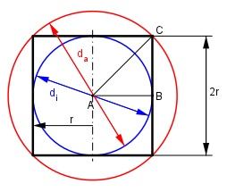

Aufgabe 320 Einem Zylinder mit dem Radius r und der Höhe 2r ist eine Kugel ein- und eine umbeschrieben. In welchem Verhältnis stehen ihre Volumina und ihre Oberflächen zueinander?

Volumen: Zylinder VZ = л * r2 * h = л * r2 * 2 * r = 2 * л * r3 Innere Kugel: 4 * r3 * л Vi = ------------- 3 Äußere Kugel: Satz von Pythagoras im Dreieck ABC: AC2 = AB2 + BC2 AB = AC = r AC2 = r2 + r2 = 2 * r2|√ AC = r * √2 = ra 4 * л * ra3 Va = ------------ = 3 4 * л * (√2 * r)3 4 * л * 2 * √2 * r3 = ------------------- = ---------------------- 3 3 8 * л * √2 * r3 Va = ------------------- 3 VZ 2 * л * r3 1 ---- = ------------- = --- Vi 4 * r3 * л 2 ------------ --- 3 3 2 oder VZ : Vi = 1 : --- = 1 : 0,67 3 VZ 2 * л * r3 1 ---- = ----------------- = ---------- Va 8 * л * √2 * r3 4 * √2 ----------------- -------- 3 3 4 * √2 oder VZ : Va = 1 : -------- = 1 : 1,886 3 4 * r3 * л ------------ Vi 3 1 ---- = ------------------ = --------- Va 8 * л * √2 * r3 2 * √2 ----------------- 3 oder Vi : Va = 1 : (2 * √2) = 1 : 2,828 VZ : Vi : Va = 1 : 0,67 : 1,886 Oberfläche: Zylinder: OZ = 2 * л * r * h + 2 * л * r2 = = 2 * л * r * 2 * r + 2 * л * r2 OZ = 4 * л * r2 + 2 * л * r2 = 6 * л * r2 Innere Kugel: Oi = 4 * л * r2 Äu0ere Kugel: Oa = 4 * л * ra2 = = 4 * л * (√2 * r)2 = 8 * л * r2 OZ 6 * л * r2 1 ---- = ------------ = --- Oi 4 * л * r2 2 --- 3 2 oder OZ : Oi = 1 : --- = 1 : 0,67 3 OZ 6 * л * r2 1 ---- = ------------ = --- oder Oa 8 * л * r2 4 --- 3 4 oder OZ : Oa = 1 : --- = 1 : 1,33 3 Oi 4 * л * r2 1 ---- = ------------ = --- Oa 8 * л * r2 2 oder Oi : Oa = 1 : 2 OZ : Oi : Oa = 1 : 0,67 : 1,33